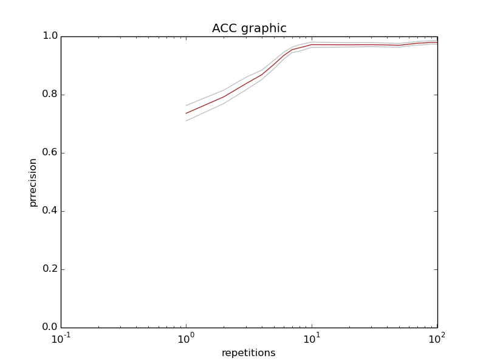

{% extends "base.html" %}
{% load staticfiles %}

{# HOME TAB ACTIVE #}

{% block hometab %}
	<li class="activetab"><a href="{% url 'index' %}">HOME</a></li>
{% endblock %}

{# CONTENT #}

{% block main %}
	<ul class="pagination">
		<li class="active" onclick="changePre(this)"><a>ACC</a></li>
		<li onclick="changePre(this)"><a>AUC</a></li>
		<li onclick="changePre(this)"><a>MCC</a></li>
		<li onclick="changePre(this)"><a>NPV</a></li>
		<li onclick="changePre(this)"><a>PPV</a></li>
		<li onclick="changePre(this)"><a>SENS</a></li>
		<li onclick="changePre(this)"><a>SPEC</a></li>
	</ul>
	<br /><br />
	
	<br /><br />
	<ul class="pagination">
		<li class="active" onclick="changePost(this)"><a>10</a></li>
		<li onclick="changePost(this)"><a>100</a></li>
		<li onclick="changePost(this)"><a>1000</a></li>
		<li onclick="changePost(this)"><a>3964</a></li>
	</ul>
	<script>
		window.pre = 'ACC';
		window.post = '100';
		window.path = document.URL.split('/graph_2d')[0] + "{% static 'graphs_2d/' %}"; // DIPENDE DA NOME PAGINA

		function changePre(dis) {
			var img = document.getElementById('graph');
			window.pre = dis.childNodes[0].innerHTML;
			var src = window.pre + '_' + window.post + '.png';
			img.setAttribute('src', window.path + src);
		}

		function changePost(dis) {
			var img = document.getElementById('graph');
			window.post = dis.childNodes[0].innerHTML;
			var src = window.pre + '_' + window.post + '.png';
			img.setAttribute('src', window.path + src);
		}
	</script>
{% endblock %}
